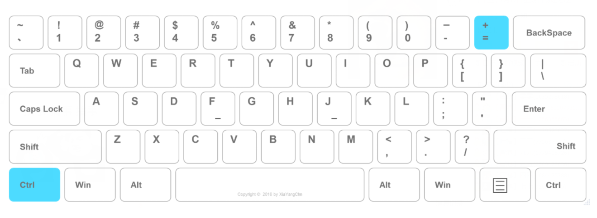

软件介绍及使用说明
一、软件概述：
盲打助手(Touch-Typing)是一款Windows平台的轻量级桌面应用，该应用主要用于辅助新手学习键盘盲打。
二、软件特色：
1.软件主体是一个虚拟的标准键盘，该键盘窗体呈半透明，且始终处于桌面最上层。用户可通过快捷键对窗体的 位置、大小和透明度进行个性化调整。
2.虚拟键盘给人一种代入感，使用户通过视觉感受按键的大致位置，进行按键点击，同时应用会对用户操作进行实时的视觉反馈。通过视觉和触觉的双重反馈，使用户对键盘键位产生深刻的印象，便于用户对键盘键位的记忆，使用户更快的学会盲打。
3.该虚拟键盘对用户的鼠标、键盘操作透视，即用户可以透过该窗体对其他软件进行操作，因此用户可以在聊天、写作的同时进行盲打练习。不需要花费额外的时间和精力训练。
三、使用方法：
1.双击exe文件即可打开，无需安装
2.单击任务栏菜单可以切换显示/隐藏，右键点击可选择关闭窗口
3.软件初始状态为半透明界面，显示在桌面最上层，且对用户操作透明，不会获取用户焦点，点击Ctrl键可获取焦点
4.窗口拖拽： 点击Ctrl键，鼠标左键点击键盘窗口，即可进行拖拽
5.调整透明度： 点击Ctrl键，鼠标单击窗口，使窗口获得焦点，点击"-"\"="键，分别降低、增加透明度
6.调整窗口大小：点击Ctrl键，鼠标单击窗口，滑动滚轮，可调节窗口大小；点击Ctrl键，鼠标单击窗口，鼠标左键拖拽窗口右下角三角图标，也可调节窗口大小
四、开发者：XiaYangChn，有疑问请联系QQ：1779405726
截图示例 1.聊天的同时练习盲打
2.窗体被覆盖照常使用
设置示例：
1.Ctrl键 + 鼠标点击窗口，使窗口获得焦点，即可拖拽
2.降低透明度， Ctrl + "-" 键
 3.增加透明度， Ctrl + "=" 键
3.增加透明度， Ctrl + "=" 键 4.鼠标左键点击缩放（或鼠标滚轮缩放）